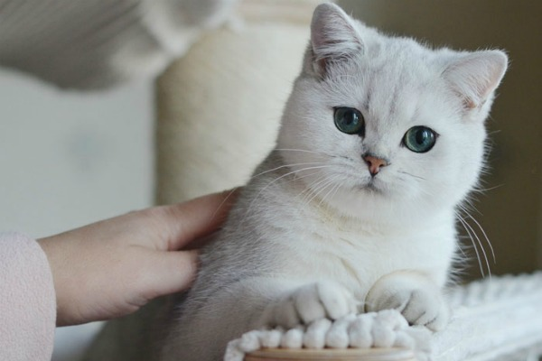

Уход за
Британской
кошкой
Сбалансированная, наделенная всеми витаминами пища, необходима каждому питомцу. Среди заводчиков и держателей кошек бытует спор: чем лучше кормить котенка-британца — натуральной пищей или сухим кормом.

Если вы остановились на натуральной еде, то рацион должен основываться на мясе и птице (курица, индейка). Можно давать печенку и вареное яйцо, но не злоупотреблять этими продуктами. Мясо обязательно проваривать и отделять от костей.
Никакой шкурки, кожицы или лапок — вы можете причинить кошке вред. К мясу можно добавлять гречку, рис или перловку.

Из овощей разрешается употреблять морковь, капусту, кабачки и огурцы. Творог, молоко, сметана и кефир – молочка — одна из главных ниш в рационе животного.

КОШКИН ДОМ